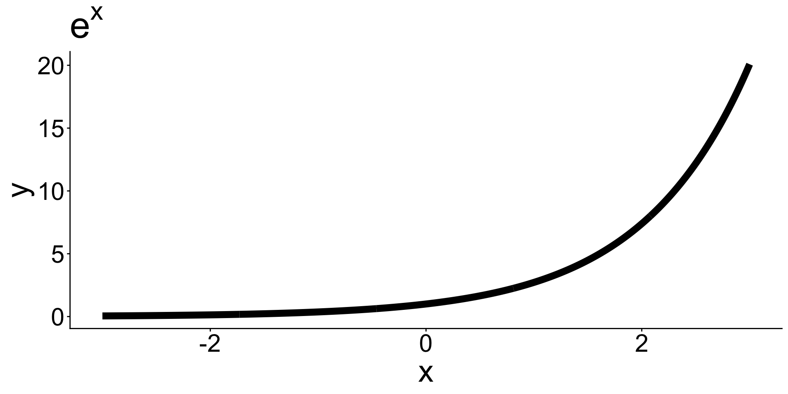
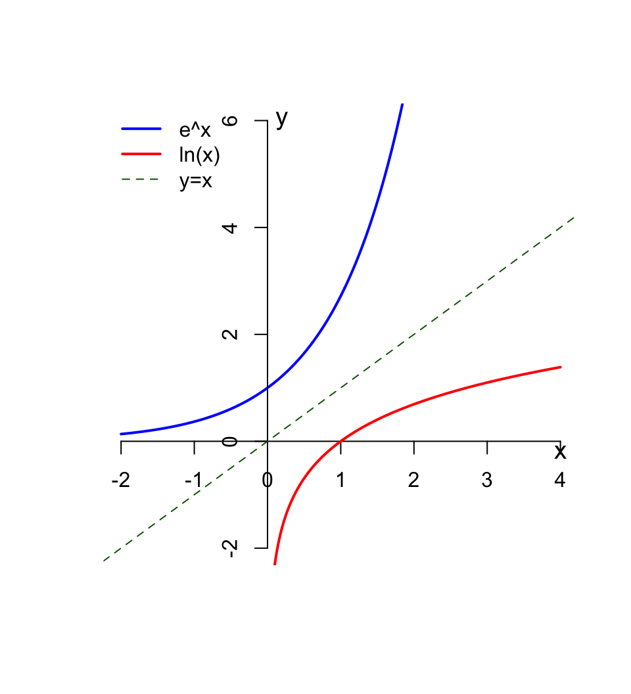
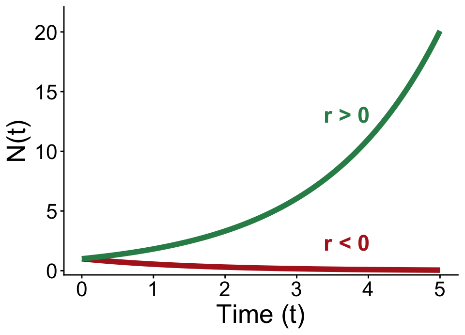

One reason: Exponential trends show up a LOT in environmental science (the proportional change is the same over each time span)
Math reason: Turns out it’s a very useful value for calculus


Day 2: Bren Math Workshop
Carmen Galaz García, Ph.D.
Bren School of Environmental Science & Management
The number \(e\)
The number \(e\) is a constant in mathematics, it is approximately \(2.72\), but really its decimals continue infinitely without any pattern:
\(e = 2.71828182845904523536...\)
The number \(e\)
The number \(e\) is a constant in mathematics, it is approximately \(2.72\), but really its decimals continue infinitely without any pattern:
\(e = 2.71828182845904523536...\)
It’s exact value can be described as \[ e = 1 + 1 + \frac{1}{1*2} + \frac{1}{1*2*3} + \frac{1}{1*2*3*4} + \frac{1}{1*2*3*4*5} + ... \]
The number \(e\)
The number \(e\) is a constant in mathematics, it is approximately \(2.72\), but really its decimals continue infinitely without any pattern:
\(e = 2.71828182845904523536...\)
It’s exact value can be described as \[ e = 1 + 1 + \frac{1}{1*2} + \frac{1}{1*2*3} + \frac{1}{1*2*3*4} + \frac{1}{1*2*3*4*5} + ... \]
Like any other number, \(e\) follows normal power properties:
\[ \begin{align} e^x\cdot e^y &=& ?\\ \frac{1}{e^x} &=& ?\\ \frac{e^x}{e^y} &=& ?\\ (e^x)^r &=& ? \end{align} \]
✏️ Take a moment to write these with a single exponent.
The number \(e\)
The number \(e\) is a constant in mathematics, it is approximately \(2.72\), but really its decimals continue infinitely without any pattern:
\(e = 2.71828182845904523536...\)
It’s exact value can be described as \[ e = 1 + 1 + \frac{1}{1*2} + \frac{1}{1*2*3} + \frac{1}{1*2*3*4} + \frac{1}{1*2*3*4*5} + ... \]
Like any other number, \(e\) follows normal power properties:
\[ \begin{align} e^{x+y}&=&e^x\cdot e^y \\ e^{-x}&=&\frac{1}{e^x}\\ e^{x-y}&=&\frac{e^x}{e^y}\\ e^{rx}&=&(e^x)^r \end{align} \]
The exponential funciton
The exponential function \(e^x\) is the number \(e\) raised to the \(x\) power.
In function notation you may sometimes see it as
\[ f(x) = e^x \ \ \text{ or } \ \ \text{exp}(x).\]

Why is the exponential function so common?
One reason: Exponential trends show up a LOT in environmental science (the proportional change is the same over each time span)
Math reason: Turns out it’s a very useful value for calculus
A real-world example:
Source: Our World in Data
Logarithms
\(\log_a(b)\) is the exponent you need to raise \(a\) to get a value of \(b\)
For example:
Natural logarithms
✏️
Natural logarithms
If \(y>0\), then \(\ln(x)\) is the exponent you need to raise \(e\) to in order to get \(y\).
This means:
\[ \begin{align} \ln(e^x) &= x \\ e^{\ln(y)} &= y \end{align} \]
In other words, \(\ln(x)\) is the inverse of the exponential function \(e^x\).
✏️ Examples
\(\ln(e^3)\)
\(\ln(\frac{1}{e})\)
\(\ln(1)\)
\(\ln(0)\)
\(\ln(-7)\)
Natural logarithms
If \(y>0\), then \(\ln(x)\) is the exponent you need to raise \(e\) to in order to get \(y\).
This means:
\[ \begin{align} \ln(e^x) &= x \\ e^{\ln(y)} &= y \end{align} \]
In other words, \(\ln(x)\) is the inverse of the exponential function \(e^x\).
Examples
\(\ln(e^3) = 3\) because 3 is the power of \(e\) needed to get \(e^3\).
\(\ln(\frac{1}{e}) = \ln(e^{-1}) = -1\)
\(\ln(1) = 0\) because 0 is the exponent we need to raise \(e\) to to get 1
\(\ln(0)\) does not exist, because there’s no number we can raise \(e\) to to get 0
\(\ln(-7)\) does not exist, because \(e\) to any number always be positive
Natural log properties
✏️
Natural log properties

Properties
\(\ln (e^x)=x\)
\(\ln(xy)=\ln x+\ln y\)
\(\ln(\frac{x}{y})=\ln x-\ln y\)
\(\ln(x^y)=y \ln x\)
Using logarithms to solve equations
✏️ Solve for \(t\) in the equation \(Pe^{rt} = A\).
Properties
\(\ln (e^x)=x\)
\(\ln(xy)=\ln x+\ln y\)
\(\ln(\frac{x}{y})=\ln x-\ln y\)
\(\ln(x^y)=y \ln x\)
Using logarithms to solve equations
✏️ Solve for \(t\) in the equation \(Pe^{rt} = A\).
\[ \begin{align} Pe^{rt} &= A \\ e^{rt} & = \frac{A}{P} \\ rt &= \ln\left(\frac{A}{P}\right) \\ t &= \frac{\ln(A)-\ln(P)}{r} \end{align} \]
Exponential growth
When a population grows at a rate that is directly proportional to its size, we can model the population size at a time \(t\) as
\[N(t) = N_0e^{rt}\]
where
✏️ Take a minute to solve these individually.
What per capita intrinsic growth rate would make the population remain stable across time?
Are the following statements true or false? Explain your reasoning.
If \(r=\ln(\frac{1}{2})\), then the population will be half of its original size at \(t=2\).
If \(r=\ln(4)\), then the population will be four times its original size at \(t=1\).
Make a hypothesis about how \(r\) being positive or negative is related to growth or decay of \(N(t)\).
Assuming \(r>0\), when will the population double?
Exponential growth practice
What per capita intrinsic growth rate would make the population remain stable across time?
Are the following statements true or false? Explain your reasoning.
If \(r=\ln(\frac{1}{2})\), then the population will be half of its original size at \(t=2\).
If \(r=\ln(4)\), then the population will be four times its original size at \(t=1\).
✏️ Let’s see a solution!
Exponential growth practice
Make a hypothesis about how \(r\) being positive or negative is related to growth or decay of \(N(t)\).
Assuming \(r>0\), when will the population double?
✏️ Let’s see a solution!
Solutions
(1) A stable population means \(N(t)=N_0\) for every \(t\), so we need \(e^{rt}=1\) for all \(t\), which requires \(r=0\).
(2)
False. \(N(2)=N_0e^{2\ln(1/2)}=N_0\left(\frac{1}{2}\right)^2=\frac{N_0}{4}\), a quarter of \(N_0\), not a half.
True. \(N(1)=N_0e^{\ln(4)}=N_0\cdot 4=4N_0\).
(3) The sign of \(r\) determines whether \(N(t)\) grows (\(r>0\)) or decays (\(r<0\)). See the plot on the next slide!
(4) Solve \(N_0e^{rt}=2N_0\) for \(t\): \[ \small e^{rt}=2 \ \Rightarrow \ rt=\ln(2) \ \Rightarrow \ t=\frac{\ln(2)}{r} \]
Exponential growth
When a population grows at a rate that is directly proportional to its size, we can model the population size at a time \(t\) as
\[N(t) = N_0e^{rt}\]
where

What environmental constraints could cause the population to not follow exponential growth?
But populations can’t grow exponentially forever
Gause, G. F. 1934. The Struggle for Existence. Baltimore: Williams and Wilkins.
Logistic growth
\[N_t=\frac{K}{1+[\frac{K-N_0}{N_0}]e^{-rt}}\]
Where \(N_t\) is the population size at time \(t\), \(K\) is the carrying capacity, \(N_0\) is the initial population size, and \(r\) is a growth rate.
✏️ What should be the value of the formula when \(t=0\)? Confirm your answer by substituting.
We should always understand the components of formulas and equations - both conceptually and mathematically.
Logistic growth: Example
What is \[N_t=\frac{K}{1+[\frac{K-N_0}{N_0}]e^{-rt}}\] when t = 0?
Solution
\[ \begin{aligned} N_0 &= \frac{K}{1+[\frac{K-N_0}{N_0}]e^{-r(0)}} &\text{Substitute } t=0 \\ &= \frac{K}{1+[\frac{K-N_0}{N_0}](1)} &e^{0}=1 \\ &= \frac{K}{\frac{N_0 + (K-N_0)}{N_0}} &\text{Combine terms in the denominator} \\ &= \frac{K}{\frac{K}{N_0}} &N_0 + (K-N_0) = K \\ &= N_0 \end{aligned} \]
Logistic growth
\[N_t=\frac{K}{1+[\frac{K-N_0}{N_0}]e^{-rt}}\]
Why might we expect logistic growth for many populations?
What variables besides time would influence the actual population?
Let’s take a 10 minute break
image: Flaticon.com
Get some extra practice!
What we covered today